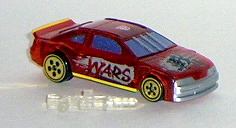
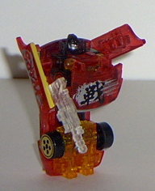
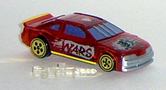
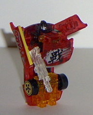
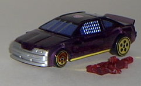
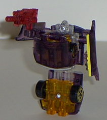

 
Size : Spychanger (comes packaged individually)
Color Scheme : Transparent dark red, transparent orange, silver, dark sparkly blue, and some black, transparent black, chrome gold, yellow, and clear plastic
Rating : 4.6
Vehicle mode is a race
car, NASCAR-style. (W.A.R.S., by the way, is short for
W
icked
A
ttack
R
econ
S
portscar. Lame, I know.) This mode is very nice, with
zero extras whatsoever. It's exactly the size of your average Hot Wheels
car, too, so it can interact easily with those kind of racing sets if you
have any. The detail molding for this mold is pretty good as well, with
"bars" molded on the front of the car, and a safety net molded on the front
window on the driver's side (although the latter isn't painted differently
than its surroundings). There's also some neat Japanese lettering on the
hood with a silver blur behind it. I have no clue what the lettering says,
but it sure looks neat. There's also "WARS" written in silver blurs on
each side of the cars. A nice touch. W.A.R.S.' gun cannot be stored in
this mode, like the other Wave 1 Spychangers, and it really cheeses me
off that I have to put the gun in another container when I want to keep
him in this mode. Especially since the gun is made of CLEAR plastic, so
it's ridiculously easy to lose. It wouldn't have been that hard to integrate
the gun into this mode, honestly- just store it on the underside. Still,
besides that, this is a pretty cool mode. The Autobot symbol is easily
visible on the top of the car.
I don't like most of
the Spychanger's robot modes, and W.A.R.S. is no exception. In fact, it's
actually a little worse than average. Although the car hood fits more snugly
into the chest area than any of the other Spychanger's, W.A.R.S.' arms
have these relatively long plastic panels molded to the outside of them
(the car doors), and since the arms are so small comparatively, it looks
rather bad. W.A.R.S.' upper half also doesn't separate from his lower half
nearly as much as with the other Spychanger's, and it looks rather weak,
since his upper legs are so short when compared with his lower legs. Like
the other Spychangers, W.A.R.S can only move his arms at the shoulders
in this mode, which limits playability. His legs are just one big piece,
consisting of the back half of the car mode. At least he's rather stable
in this mode.
A pretty nice vehicle
mode, but a rather bad-looking robot mode. It's a good chance you'll find
your money better spent on something else unless you're a completist.
 W.A.R.S.
(2002 Version, Transparent; KB Toys Exclusive)
W.A.R.S.
(2002 Version, Transparent; KB Toys Exclusive)


Size
: Spychanger (comes packaged
individually)
Color Scheme
: Transparent dark red,
transparent orange, silver, dark sparkly blue, and some black, transparent
black, chrome gold, yellow, and clear plastic
Rating
: 4.6
To everyone's surprise, a KB Toys Exclusive, transparent version of W.A.R.S. came out in summer 2002, packaged individually (and with tech specs on the back this time). What's been changed this time around is that the red plastic on the original W.A.R.S. has been changed to a dark transparent red, the black to transparent black, and the yellow to transparent orange (one of the few actual color changes of the Transparent Spychangers from their origials). Everything else is the same as it was on the original W.A.R.S. otherwise. The overall effect is pretty nice, and improves the look some- seeing the insides of the toy is always a cool effect. The orange also looks a bit better in the robot mode than the yellow, methinks, and the transparent black is always cool. Still, if you've got the original version, I'd give a second thought as to whether it's worth dropping a couple extra bucks for another version of W.A.R.S., as they're still both mostly the same.
 W.A.R.S.
(2003 Version, Transparent; KB Toys Exclusive)
W.A.R.S.
(2003 Version, Transparent; KB Toys Exclusive)


Size
: Spychanger (comes packaged
individually)
Color Scheme
: Transparent purple,
transparent light orange, clear plastic, dark sparkly blue, and some yellow,
silver, and chrome gold
Rating
: 4.3
This time around, W.A.R.S.
has a primarily purple color scheme. Clear plastic has also replaced his
black plastic, while his transparent light orange has stayed the same.
Now, these colors do work very nicely together- but the problem is, much
of W.A.R.S.' older paint detailing has been removed! No longer does he
have that silver Japanese symbol on the hood, or his name in dashes on
the side doors. Which is a shame, since I think that with those added,
this version could have been better than the previous versions. I wonder
why they took them off...
W.A.R.S.' color scheme
is better, but a good amount of his paint detailing is gone. Thusly, I'd
have to recommend the 2002 clear version over this one.
Review by Beastbot